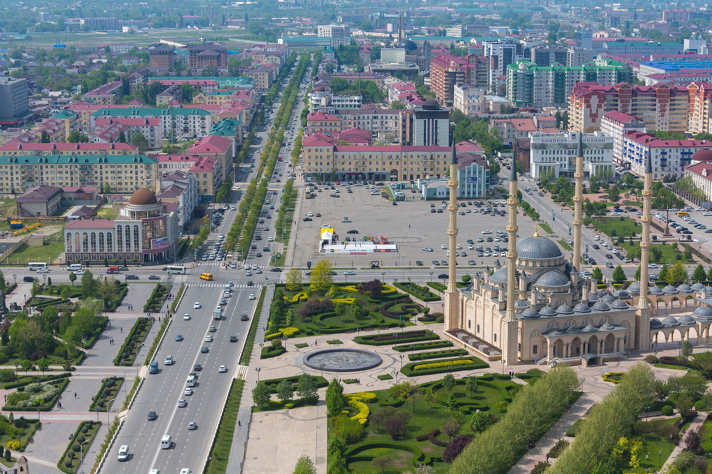
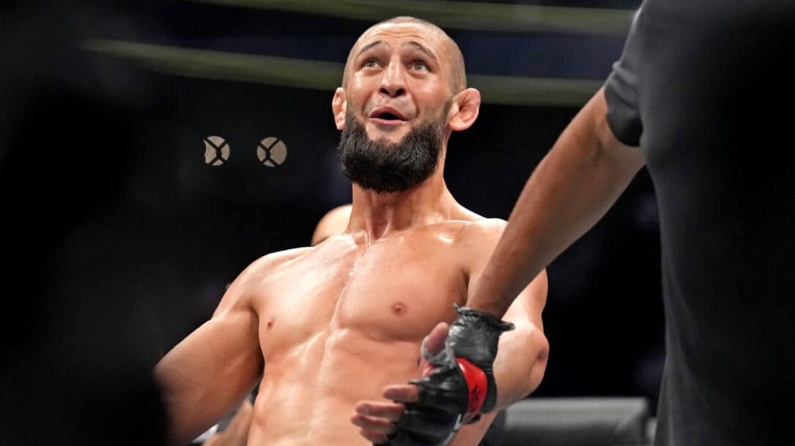
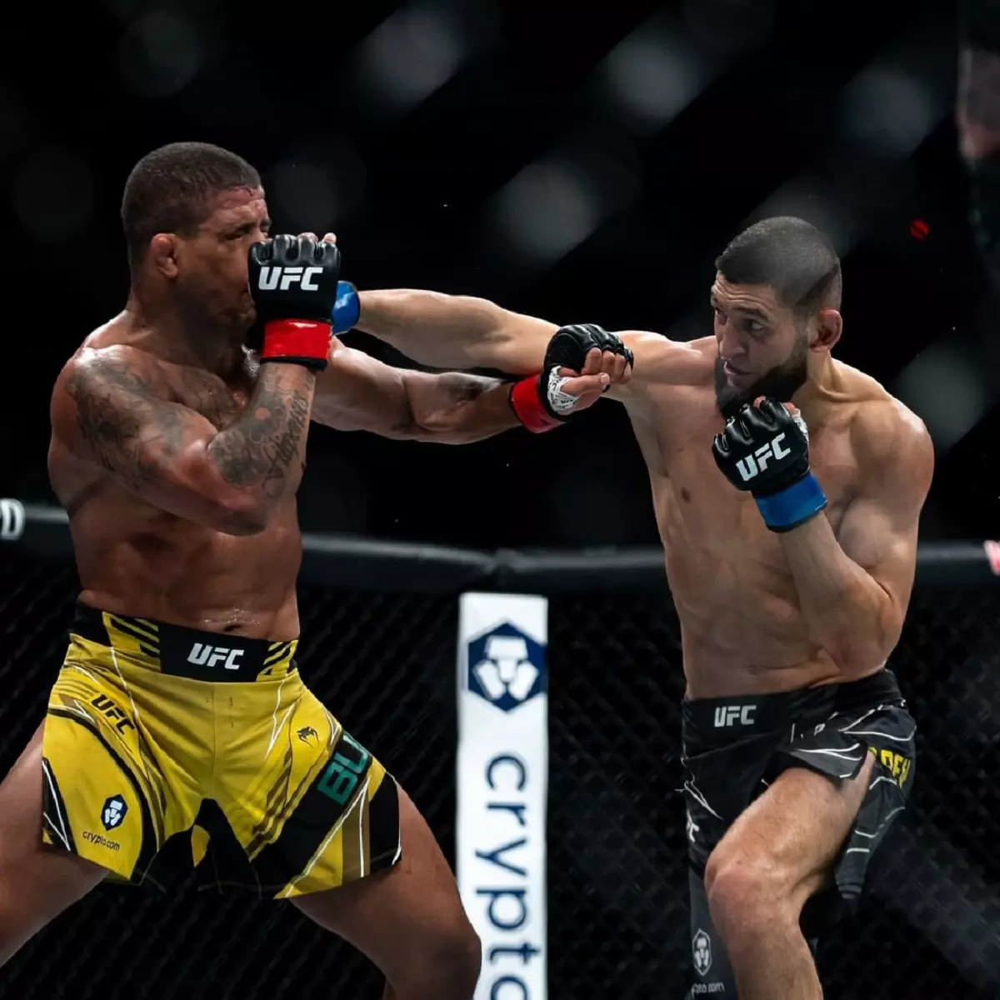
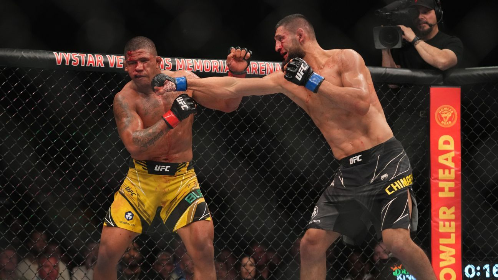

Terrotório é o lugar onde há aplicação do ordenamento jurídico, a base física em que está fixado o elemento humano. É nele que o governo pode exercer a sua organização e validar suas normas jurídicas. Constitui-se do solo, subsolo, aguas territoriais, ilhas, rios, lagos, portos, mar e espaço aéreo.
Qual o país com maior extensão territorial do mundo?
Oque é uma nação sem território?
Uma nação sem território é um povo que apesar de estabelecido em relação a ter seu próprio povo, cultura, crenças e até mesmo um líder de estado, não possui sua própria base física, ou seja, vive em um território geopolítico que pertence a outra nação.
Outro exemplo de nação sem território é o Daguestão, que fica a apenas 297km de distância da chechênia.
Próximo episódio
Oque é a chechênia?
A Chechênia é um território que atualmente é denominado como uma república pertencente à federação russa. Por se tratar de uma república, a Chechênia tem autonomia para fomentar sua etnia própria (que não é de origem russa), tendo assim seu idioma, sua bandeira e sua constituição. Entretanto, mesmo sendo uma república, a Chechênia não é considerada (nem pelos russos nem pelo restante do mundo) uma nação independente, e esse é o principal fator desencadeador dos conflitos sociais naquela região.
Qual o nome do líder da república chechêna?
Próximo episódio
FORMAÇÃO DA CHECHÊNIA E PORQUÊ ELA NÃO TEM UM TERRITÓRIO
Nação formada por aproximadamente 1,2 milhão de pessoas, os chechenos vivem em uma área de domínio russo, nas montanhas do Cáucaso. O movimento separatista ganhou força com a fragmentação da União das Repúblicas
Socialistas Soviéticas (URSS) e a declaração de independência e formação do EstadoNação da Chechênia, em 1991. Porém, os russos não aceitaram a formação do território checheno e combatem o movimento com bastante violência: estima-se que mais de 120 mil chechenos já foram assassinados pelo exército da Rússia.
Porque a chechenia não é reconhecida como uma nação:
A Independência da Chechênia é vista hoje no mundo geopolítico como sendo um feito praticamente impossível de ser concretizado.
O primeiro motivo impediente é que o atual presidente da Rússia, Vladimir Putin, já declarou diversas vezes que não aceitará em hipótese alguma assinar um decreto de independência dos chechenos.
Outro fator que não ajuda a Chechênia é que nenhuma outra nação do mundo a reconhece como um país independente; isso impede que ela ganhe forças políticas, o que acaba enfraquecendo a causa.
Próximo episódio
SITUAÇÃO ATUAL DA CHECHÊNIA
A Chechênia é considerada hoje um dos lugares mais perigosos do mundo.
A pobreza aumentou depois que o governo russo se recusou a pagar a ajuda prometida para a reconstrução da república autônoma.
Essa pobreza generalizada, aliada à disponibilidade de armas de fogo, levaram a uma explosão na criminalidade.
Os guerrilheiros oposicionistas e os líderes islâmicos executavam sequestros frequentes atraídos pelo valor do resgate e pela motivação política de manter a Rússia longe dos assuntos chechenos.
Politicamente, a república autônoma vivia um conflito entre aqueles que queriam um Estado independente democrático, como o líder Maskhadov, e aqueles que defendiam um Estado islâmico.
Qual a capital da chechênia?

Próximo episódio
ANÁLISE CRITÍCA
Apesar dos holofotes internacionais não estarem mirados em direção a chechenia nos últimos tempos, o conflito, mesmo que sem a mesma intensidade mantém a chama guerrilheira do povo Checheno acesa. A Rússia iniciou ataques aéreos militares e uma campanha terrestre na Chechênia no final Setembro de 1999, cerca de 3 anos após a luta em 1994-1996 ter terminado com acordos de paz. A campanha renovada começou depois que guerrilheiros chechenos atacaram a região vizinha do Daguestão, na Rússia, e foi acusada de bombardear vários prédios de apartamentos em Moscou e em outros lugares, matando centenas de pessoas. Apesar do ex presidente checheno Maskhadov negar a autoria dos ataques, ele não possuia controle sob a maioria dos grupos de guerrilha Chechenos. Os combates na Chechênia resultaram em milhares de baixas em ambos os lados, incluindo civis chechenos, e grande parte da população de meio milhão da Chechênia foram deslocados de suas casas.
Próximo episódio

Khamzat Chimaev. (O nome é bonitinho, vai.)
A chechênia também é palco de histórias com "finais felizes", uma delas é a do lutador Khamzat Chimaev, que nasceu no auge da guerra chechêna e encontrou nos esportes marciais um meio de fugir da violência e problemas causados pela guerra. Com apenas 5 anos, Chimaev começava dar pequenos passos no Wrestilling, chegando a competir em campeonatos locais. Aos 12 anos, Chimaev se mudou com sua mãe e irmãos para a Súecia, onde viveu grande parte da sua juventude. Por não saber falar direito a lingua local e não possuir o visto sueco, chimaev e sua familia passaram por diversas dificuldades.
Na Suecia, Chimaev competiu em campeonatos locais e chegou até a derrotar oponentes que já haviam participado das olimpiadas. Porém, por conta da falta do visto, não podia competir em grandes campeonatos. No Wrestilling, Chimaev acumulou o cartel de 10-0-0.
Mas foi no MMA que Chimaev viu uma oportunidade de conseguir uma vida melhor para a mãe e os irmãos. Em 2019 Chimaev ingressou na BraveCF (Brave Combat Federation), por lá, conquistou vitórias dominantes sob todos os adversários. Encerrando seu contrato na Brave com um cartel de 4-0-0 no MMA. Pouco tempo de depois de sair da Brave, ele ingressou no UFC e lá se mantém até hoje com um cartel de 6-0-0, sendo uma dessas vitórias contra o Brasileiro Gilbert Burns.

Essa luta foi bem equilibrada. Mas sou fã do Chimaev, então só vai ter foto dele acertando os golpes.

Próximo episódio
CRÉDITOS :)
O código foi feito nas pressas e a hospedagem não é das melhores, se você chegou até aqui sem problemas, parabéns.
Texto e pesquisa : Giulia Rafaela
Site : Henrique M.
Design e ideias : Giulia Rafaela, Henrique e a fé que iria dar tudo certo.
Linguagens de programção usadas : Javascript (e uma pitada de Typescript)
Linguagem de marcação e estilização : HTML, CSS
Não tive tempo de estilizar a tela de crédito, mas vocês só vão ver ela uma única vez, então tá ótimo.
Essa era a primeira versão do site, mas mudamos tudo várias vezes (O Contador funcionava)